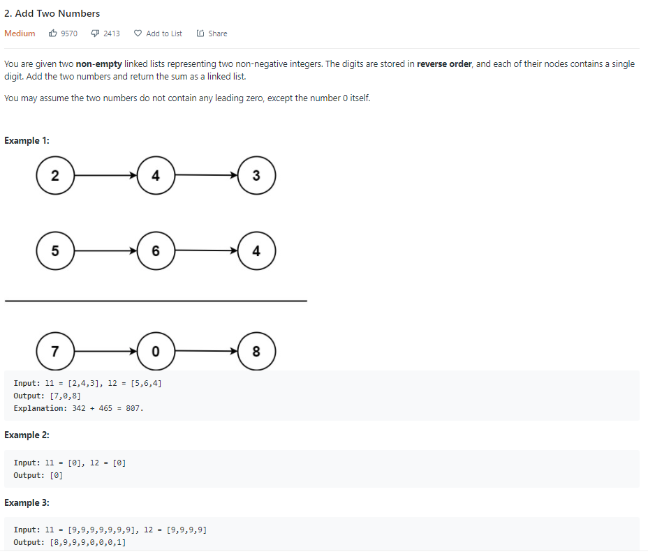

Title: Add Two Numbers
Date: 2020-10-24
Author: Linz
Add Two Numbers
Idea 1
Access the linked list
Add each list node one by one
Record the carry
At the end, if carry is 1, we need to add one more node to the end.
# Definition for singly-linked list.
# class ListNode:
# def __init__(self, val=0, next=None):
# self.val = val
# self.next = next
class Solution:
def addTwoNumbers(self, l1: ListNode, l2: ListNode) -> ListNode:
carry = 0
head = curr = ListNode()
while l1 or l2:
if l1:
carry =carry+ l1.val
l1 = l1.next
if l2:
carry =carry+ l2.val
l2 = l2.next
curr.next = ListNode(carry % 10)
carry = int(carry / 10)
curr = curr.next
if carry == 1:
curr.next = ListNode(1)
return head.next